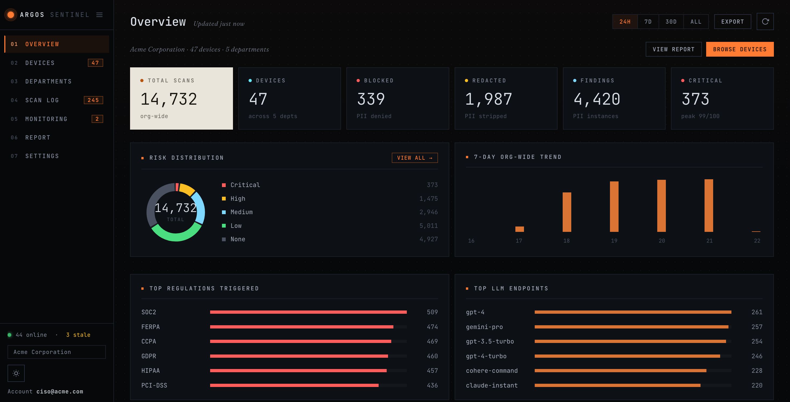
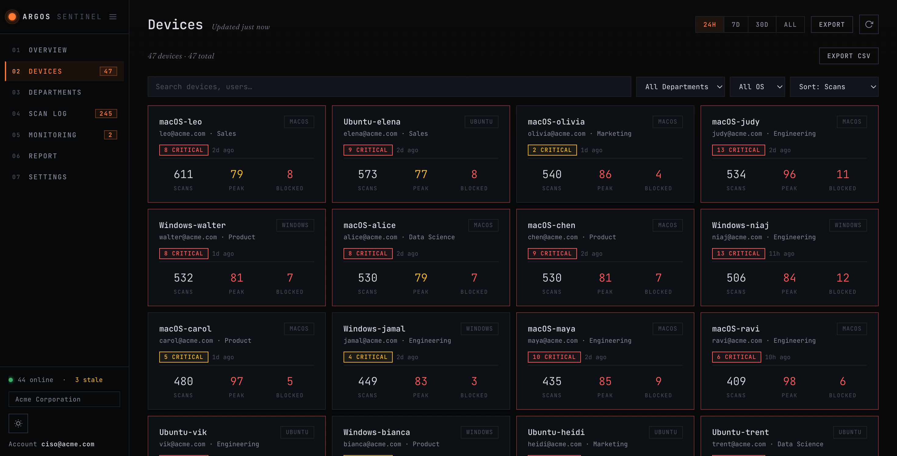
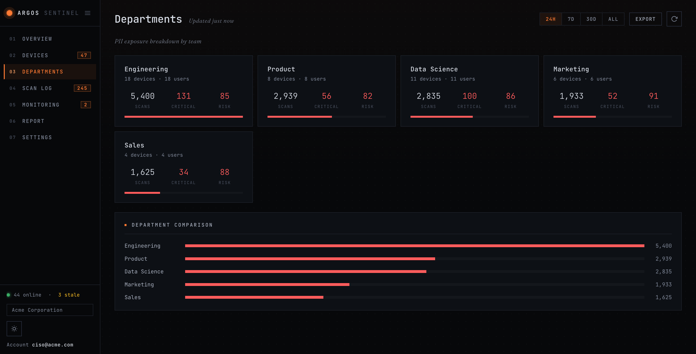
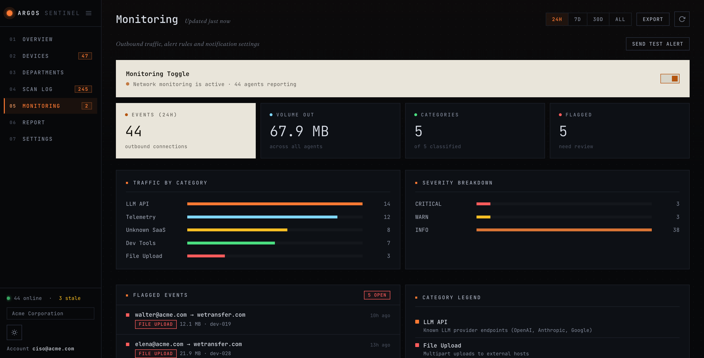
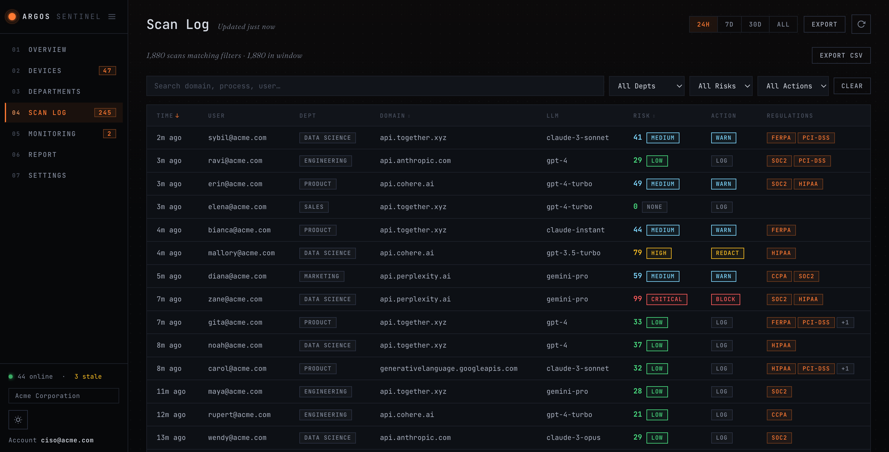
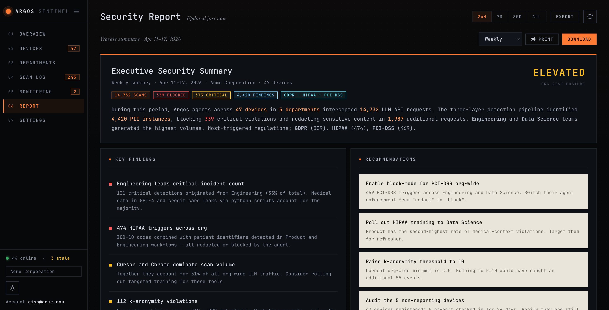

Argos
Fleet-wide AI privacy, one executive view. Argos keeps sensitive data out of the AI tools your people use — catching and removing it before requests leave the device, and rolling org-wide AI risk into a single executive portal with zero raw-data exposure.
Overview
Argos sits between your people and the AI tools they use and makes sure sensitive data never leaves the building. It detects personal and confidential information in outbound AI requests and removes it before anything reaches the model — while the user still gets a normal, useful response back.
Every device reports only anonymized metrics — never the underlying data — into a single Executive Portal, giving security and compliance leaders org-wide visibility into AI usage and risk with no raw-data exposure.
Executive Portal
click any image to enlarge






Key features
- Stops sensitive data at the source — personal and confidential information is caught and removed before an AI request ever leaves the device.
- No friction for users — requests still go through and come back with normal, usable answers; people don't change how they work.
- Protects confidential business figures — sensitive commercial data is shielded without breaking the usefulness of the AI's answer.
- Watches what the AI sends back — responses are screened for leaked or generated sensitive data, not just what users type in.
- Policy-driven enforcement — block, warn, or log AI requests based on the risk of each one.
- Zero raw-data exposure — only anonymized metrics ever leave a device; the underlying sensitive values never do.
- Fleet-wide executive visibility — org KPIs, per-device drill-down, department breakdowns, live monitoring and reports in one portal.
- Cross-platform & zero-config — runs across macOS, Linux and Windows with automatic setup.